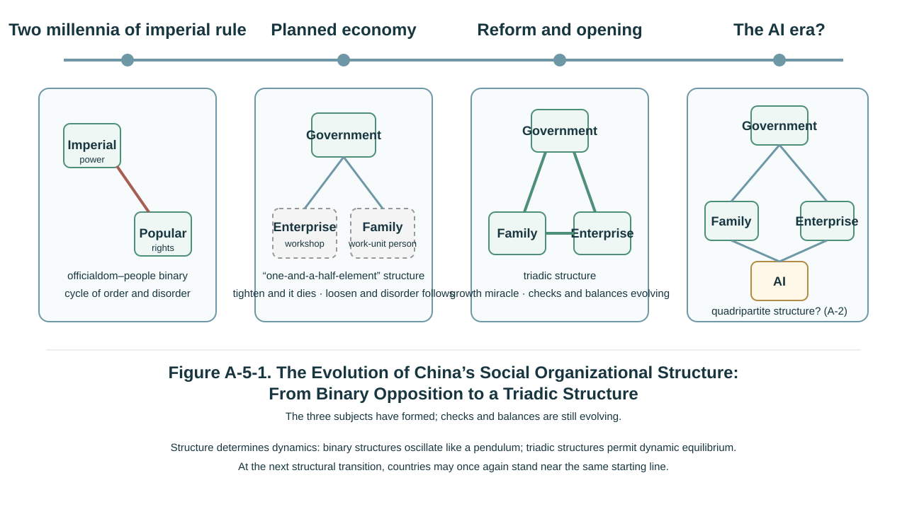

Introduction: A Puzzle Not Yet Solved
More than four decades of rapid economic growth in China constitute the event with the greatest impact on the course of human history since the late twentieth century. It has changed the worldwide configuration of rights and power and set off a reshuffling of global geopolitics. What caused China's rise? Economists, political scientists, historians, and sociologists have offered their readings, yet something always seems to stand between the readings and the thing itself. The factor-endowment account attributes it to the demographic dividend and a high saving rate; the late-development account emphasizes technology transfer and the learning curve; other scholars look for the answer in competition among counties and localities. The Nobel laureates Daron Acemoglu and James Robinson explain the rise and fall of nations through the dichotomy of inclusive and extractive institutions, yet the Chinese experience sits uneasily within their framework: on their labels, China's growth should not have lasted this long.[1]
Each of these explanations has its insight, and this essay does not deny them. Factor endowments, late-development advantage, opening to the outside world, and local competition are all real drivers of Chinese growth. But this essay wishes to press a more fundamental question: why were these factors activated only after the reform? Why was the demographic dividend released only after the 1980s? Why could technology not be brought in or learned before then? Why did local government turn from a hand that controlled into a hand that competed? The opportunities of opening did not first appear after the reform—so why was there no opening before it?
This essay offers a structural explanation: these factors could take effect after the reform because the relations among three subjects—families, enterprises, and government—had been reconstituted. The explanation does not displace the other explanations; it tries to say why they came into force only after the reform. What it supplies is a more fundamental institutional condition.
The central proposition of this essay is this: the deep change in China's rise was not merely a shift from plan to market, but the re-emergence of families and enterprises as relatively independent subjects of action, moving China from a government-dominated "one-and-a-half-element" structure to a triadic structure of families, enterprises, and government. The claim has a precise boundary: China has completed the historical transition from the absence of subjects to the formation of three subjects, but it has not completed the institutional construction that leads from the coexistence of three to their effective checks and balances. The three subjects have appeared and the triadic relation has formed; triadic checks and balances have not yet matured. Accompanying this reconstitution of subjects has been an ideological evolution from the binary-opposition thinking of the old materialist conception of history, with its emphasis on class struggle, towards what is in effect a Heheist philosophy. Pulled back to the scale of centuries, China's rise is a process in which Chinese civilization has been dismantling a structure of binary opposition and building a structure of triadic checks and balances, in institutions and in culture alike—a reconstruction still under way.
The essay proceeds in four steps. It looks first at the officialdom–people binary of the traditional imperial order and its historical consequences; then at why the planned economy was a modern variant of that binary structure, and at the double legacy it left; then at how reform and opening regenerated two relatively independent subjects, families and enterprises—this is the core of the structural explanation; and finally it faces honestly the road not yet travelled: the structural divergence in China's economy today is precisely what shows that triadic checks and balances have not matured and that the Grand Tripartite still awaits rebalancing.
I. A Thousand-Year Lock: The Officialdom–People Binary and the Cycle of Order and Disorder
In his Lectures on the Philosophy of History, Hegel made a judgment that stings Chinese readers. In Sibree's translation, Hegel argues that China reached its characteristic condition very early and thereafter displayed a recurring fixedness in place of what he regarded as genuinely historical development.[2] The judgment may not be fair—the technology, art, and thought of Chinese civilization never ceased to evolve—but it does touch a structural feature: for more than two millennia after the Qin, the political organizational structure of Chinese society was extraordinarily stable, and scarcely changed in any fundamental way.
That structure took form in the Zhou–Qin transition. The Qin abolished enfeoffment and instituted the commandery–county system, sweeping away at a stroke the aristocratic order of tiered fiefs that had prevailed since the Western Zhou, and establishing a centralized order in which the emperor reached the registered commoner households directly through a bureaucracy. "Under the wide heaven, all is the king's land; to the borders of the land, all are the king's subjects"—central power ran from the top down, directly to countless small peasant households.
What is called here the officialdom–people binary does not mean that traditional society contained only two social groups. Lineages, the gentry, monasteries, guilds, native-place associations, merchant networks, and customs of local self-government all existed widely and played a real part in maintaining order at the base of society. The decisive difference is that, compared with Europe's dispersed structure of feudal power, traditional China lacked an autonomous political subject able to stand against central power over the long run with a stable legal standing. Intermediate forces—lineages, gentry, guilds, merchant networks—existed in abundance, but the boundaries of their rights lacked independent, general, and stable institutional guarantees. They were attached to imperial power rather than checking it; they could be granted by grace, and they could be withdrawn. It is in this sense that this essay speaks of a binary opposition of officialdom and the people: not that society had only two groups, but that at the institutional level it lacked an intermediate subject holding equivalent rights and capable of sustained bargaining with state power.
Set against western Europe in the same period, the difference in power structure becomes visible. European feudalism contained a division of power: kings and lords bound one another by covenant, church and crown held each other in check, and self-governing cities grew in the interstices. Magna Carta of 1215, and Bracton's dictum that the king ought not to be under man but under God and the law,[3] express one side of a plurality of forces holding one another in check.
What is compared here is the range of institutional evolution that two power structures made possible; it is not a moral judgment ranking Chinese and Western civilization, nor does it imply that European feudalism led necessarily to modern rule of law. European feudal society also had serfdom, continuous warfare, religious persecution, and later the absolutist monarchies. Magna Carta was at first mainly a political compact between crown and nobility, not a modern declaration of civic rights; and Europe's modern institutions did not grow naturally out of feudal dispersion but took shape gradually through long and bloody conflict. The point made here is only this: a dispersed feudal structure of power retained more institutional interfaces for the plural checks and balances that came later, whereas China's highly centralized structure after the Qin left imperial power without equivalent institutionalized constraint. What constrained it was chiefly two soft forces: the idea of the Mandate of Heaven, and the ethics of the cardinal bonds.
Hence the most intriguing spectacle in Chinese political culture: thought of the highest order, with nowhere to settle in institutions. Mencius said that "the people are the most important element in a nation; the spirits of the land and grain are the next; the sovereign is the lightest".[4] Xunzi said that the ruler is the boat and the common people the water: the water can bear the boat, and the water can capsize it.[5] The people-as-root tradition is profound enough. But note the structural implication of the boat and the water: water and boat are still two poles. In ordinary times the water bears the boat; when it can bear no more, it overturns it. The "check" that the people exercised on the ruler was not institutionalized daily bargaining but a general reckoning in the form of rebellion. The cardinal bonds and constant virtues performed a soft adjustment from the other direction: binding those above by ethical responsibility, settling those below by an order of station and name. This was an idealized design for relations between officialdom and the people; it could soften the binary opposition, but it could not change the binary structure itself. If the Great Wall is taken as a cultural metaphor, it too answers to this structural temperament: an inward-turning orientation that seeks stability within and security without. (This is an associative analogy, not an inference drawn directly from frontier engineering to political culture.)
This structure had a further consequence, essential to the theme of this essay: it left no room for an independent pole of enterprises and entrepreneurs to grow. The imperial examination system drew the finest minds of society continuously into the bureaucracy. It appears to have opened a channel between the two poles; in fact it reinforced the binary structure, since the path of the elite was to enter officialdom rather than to remain among the people and strengthen society. Under a state policy of favouring agriculture and suppressing commerce, a merchant who grew rich found his safest destination in buying land, purchasing office, and attaching himself to power: capital flowed towards land and the government rather than into industrial accumulation. More critical still was the lack of stable protection for property rights. The historical records and later legends surrounding Shen Wansan, the great magnate of the early Ming, and the career of Hu Xueyan, the late-Qing "red-capped merchant" who rose to the heights and fell abruptly, both reflect the heavy dependence of traditional commercial wealth on political power: in an environment without institutionalized protection of property, even the greatest commercial fortune could be gathered or scattered with the favour of power. Industry and commerce in Ming and Qing Jiangnan once flourished enough for later historians to argue over "sprouts of capitalism", but the sprouts long failed to grow into trees; one important reason was structural. In an environment where property rights lacked stable institutional guarantees, it was hard for there to grow up, in any stable way, a class of entrepreneurs holding independent property rights and capable of sustained bargaining with power. Western Europe's merchant class grew step by step in the fissures of feudalism into a civil society and then into one pole of the modern economy. By contrast, China's traditional merchant stratum never acquired an institutionalized standing equal to power: however great its wealth, its property rights rested in the end on what power permitted, not on a guarantee independent of power.
The dynamic consequences of a binary structure have already been argued philosophically in T-3, Heheism, on this website: a structure in which two poles face each other directly, with no intermediate pivot, can only swing between the poles like an undamped pendulum. Chinese history supplies the longest-run empirical demonstration of that proposition—the cycle of order and disorder. In a dynasty's early years, taxes and corvée were light and officialdom and people lived at peace; after long tranquillity, power lost its constraints and land concentration lost its limits, and the people could no longer bear it; at last a peasant rising settled all accounts, the dynasty changed, and everything began again. "Long divided, must unite; long united, must divide"—round and round for two thousand years. Jin Guantao and Liu Qingfeng summarized this as an ultrastable structure: an organizational structure extraordinarily stable, while the operation of society oscillated violently, each great upheaval being enormously destructive and the structure rebuilt afterwards being almost identical to the one before.[6] In 1945, in a cave dwelling at Yan'an, Huang Yanpei put his famous question to Mao Zedong—how to escape the cyclical law of history, by which a regime "rises swiftly and falls just as swiftly".[7] He was asking about precisely this structural lock.
The conclusion of this part can be gathered into a sentence: the puzzle of two thousand years of "stable structure, unstable society" is the puzzle of a binary-opposition structure. With no third party in the structure, contradiction has no buffer; with no daily hehe adjustment of contradiction, it can only accumulate until it is settled all at once in crisis. To escape the cyclical law of the order-and-disorder cycle, changing the dynasty is of no use, and a "good emperor" is of no use either. The structure must be changed.
II. The Planned Economy: A Modern Variant of Binary Opposition
The planned economy established after 1949 was intended precisely to escape the cycle of order and disorder: to replace the blindness of the market with unified planning, to root out the soil of concentration and exploitation through public ownership, and to achieve order and fairness once and for all. Examined structurally, however, a deep historical irony appears: the planned economy did not leave the binary structure behind; it gave it a modern form.
Consider the structure first. Under the planned system the governmental pole was unprecedentedly strong. It not only monopolized power but directly organized the whole of production—government ran the enterprises. Enterprises had no independent interests, property rights, or decision-making authority; in essence they were workshops of the administrative system, and the factory director answered to a superior department, not to the market. The family pole was absorbed by organization. In the cities, enterprises ran society: a person's housing, medical care, children's schooling, even weddings and funerals were all provided by the work unit; the personnel file was in the work unit and the household registration was in the work unit, and away from it one could not take a step. The individual was subordinate to the unit, forming what may be called a work-unit system of human-capital attachment (danwei). In the countryside, government and commune were fused, the production team turned out to work and distributed as one, and the family economy vanished into the commune's common pot. Alongside this came ration coupons of every kind—for grain, cloth, oil, meat. Consumption was determined not by the family's purse but by the state's plan. What the family lost was not only property but its standing as an independent economic subject. Count the subjects of action: enterprises had lost their independence, absorbed into the administrative system; families had to a great extent lost their standing as independent economic subjects, absorbed into the work unit and the commune. Three elements had been compressed into "one and a half"—an all-embracing government, plus half a society that had lost its independence. The ancient structure of the officialdom–people binary continued in the new form of state and work-unit person.
Where the structure is the same, the pathology is the same. The first pathology is the fundamental contradiction argued in both Part I of Three Major Defects in Mankiw's Principles of Economics (hereafter the Mankiw Critique) and Heheism: the contradiction between public ownership of the means of production and the natural private ownership of labour-power. Labour-power as embodied human capital exists within the life of each person and belongs by nature to that person; each person's endowment and effort naturally differ. Egalitarian distribution levelled that difference: working and not working came to the same thing, working more and working less came to the same thing. In terms of the cost–benefit ratio, where the return is fixed, the less one puts in the more one gains. Rational individuals therefore chose, quite generally, to slack; individual rationality summed into collective irrationality; incentives disintegrated and efficiency collapsed. In the language of Heheism, this is "to supplement sameness with sameness is, once exhausted, to be cast aside": the attempt to handle difference by enforced sameness can harvest only general shortage. The Hungarian economist János Kornai's classic diagnosis of socialist economies—that shortage is the normal condition of such systems and not an accident[8]—was felt in China in the years of ration coupons as something close to the bone.
The second pathology is the cycle of order and disorder reproduced inside the system: the small cycle of "tighten and it dies, loosen and it falls into disorder". Central power tightens; control is so rigid that the economy is stifled; power is therefore devolved to localities and enterprises; loosen a little and vitality appears, but order too begins to slip; disorder brings a fresh tightening; tightening brings a fresh stifling. The pendulum of centralization and devolution swung several times during the three decades of the planned economy—a large devolution to the localities in the late 1950s, recentralization in the early 1960s, another loosening and tightening in the 1970s. This is the old logic of undamped oscillation in a binary structure, except that the period of oscillation had shortened from the two or three centuries of a dynasty to the eight or ten years of a policy cycle. There was still no third party in the structure: no independent enterprises speaking through price signals, no independent families voting through consumption choices. Adjustment depended entirely on those above tightening and loosening rights and powers—and the tightening and loosening were themselves the source of the oscillation.
Ideology and institutional structure were of one form. The philosophy supporting the planned system was the binary-opposition thinking of the old materialist conception of history, with class struggle made absolute: society was cleft into the two great classes of capital and labour, the world was divided into two camps locked in a fight to the death, struggle was the sole engine of historical advance, and "taking class struggle as the key link" was the political summit of that philosophy. Worse still, the old materialist conception of history enthroned the mode of material production as the sole motive force of social development: it saw production and not life, spoke of Productive Forces and not of Life-Reproduction Capacity, and demoted the family's population reproduction, consumption, and child-rearing to appendages of production. The criticism of the philosophy of struggle in T-3, Heheism, and the criticism of "production emphasized and life neglected" in Part II of the Mankiw Critique, both have their root here.
But to criticize the planned economy's defect of subjects, structurally, is not to say that the first three decades achieved nothing. Otherwise one could not explain where the industrial capacity of the reform era came from.
The planned economy had serious defects in its structure of subjects and its micro-level incentives, but it also completed several kinds of basic accumulation that pre-industrial countries find hard to complete quickly. In this period China built a comparatively complete industrial system and defence industry, laid the skeleton of its infrastructure, greatly raised the levels of basic education and public health (the improvements in literacy and life expectancy being especially marked), and forged a powerful capacity for state organization and mobilization. This accumulation constituted the material and human foundation of the growth that followed. The achievements of reform and opening therefore did not arise from a vacuum: through a new triadic structure of subjects, they reactivated the existing accumulation and greatly raised the efficiency with which it was allocated. In other words, the first three decades accumulated a stock but were trapped in an inefficient structure of allocation; reform, by reconstituting the relations among subjects, gave that stock for the first time the institutional conditions in which it could operate efficiently. This too accords with Heheism's rejection of either-or: history is seldom pure failure or pure success.
Part II can therefore be gathered into a judgment: the difficulty of the planned economy was chiefly a difficulty of structure—it rebuilt the officialdom–people binary in the name of the modern, and so inherited many of that structure's pathologies; but it also left behind an accumulation that could be reactivated. The real way out was to change the structure of subjects. And this time China really did change it.
III. Reform and Opening: The Formation of a Triadic Structure of Subjects
The most popular summary of reform and opening is "from plan to market". The summary is not wrong, but it stops at the level of appearances. The market is no mechanism that fell from the sky; it requires subjects of action—buyers and sellers with independent interests, independent property rights, and the capacity to decide for themselves. The deepest breakthrough of the reform was the regeneration of two relatively independent subjects of action, converting the planned economy's "one-and-a-half-element" structure into a triadic structure of families, enterprises, and government: the restoration of the family pole, the birth of the enterprise pole, and the turn in the functions of the governmental pole. The structural explanation of this essay rests on these three moves.
The first move: the birth of the family pole—labour-power became a commodity, and the family became a subject of action that entered market competition in pursuit of labour-income-based happiness maximization. From then on every family became a small engine, injecting into China's economic take-off its most elemental initial power.
The starting point was in the countryside. In the winter of 1978, eighteen peasant households in Xiaogang village, Anhui, pressed their fingerprints to an agreement to contract output to the household; within a few years the household contract responsibility system had swept the country. "Deliver enough to the state, retain enough for the collective, and keep the remainder for oneself."[9] Concealed in that peasant sentence was a revolution in property rights: ownership of land was separated from the right to use it, and the family became once more an economic unit that kept its own accounts and bore its own profits and losses. The family pole, absorbed by the commune for more than twenty years, had come back to life.
The corresponding urban reform was in the labour and employment system: breaking the "iron rice bowl" and the egalitarian "big-pot" distribution, abolishing unified state assignment of jobs, and introducing labour contracts. Labour-power returned from the ownership of the work unit to the ownership of the individual, and the natural private ownership of labour-power as embodied human capital received institutional recognition for the first time. The historical energy of that recognition is hard to measure: hundreds of millions of surplus rural labourers poured into the cities and the coast, and the total number of migrant workers reached 299.73 million in 2024[10]—a movement of labour on a scale rarely seen in peacetime in human history. Labour-power became a commodity and acquired a price in the employment market, and the family became from then on an independent market subject that lived by wage income and decided for itself on consumption, child-rearing, education, and procreation. In the language of this website: of the two kinds of production, the one grounded in consumption for daily living—the procreation of population and the reproduction of labour-power as embodied human capital—was reconnected to the underlying circuit of the market economy, and it is the indispensable and most important link in that circuit.
The second move: the birth of the enterprise pole—capital acquired independent boundaries of property right, and the enterprise became a subject of action with independent interests, pursuing profit maximization through market competition. Clusters of enterprises and a stratum of entrepreneurs rose to become the many thousands of bellwethers leading China's economic take-off, innovation, and development.
From the devolution of power and the sharing of profits, the substitution of tax for profit, and the contract system, to the joint-stock restructuring and modern enterprise institutions of the 1990s, and then to grasping the large while releasing the small, mixed ownership, and the socialization of capital, state-owned enterprises gradually acquired corporate property rights and interest boundaries independent of the administrative system, and factory directors began to answer to the market. At the same time an entirely new species appeared from nothing: individual businesses, township and village enterprises, and privately run enterprises. In 2018 the authorities summarized the contribution of the private economy in the formula "fifty, sixty, seventy, eighty, ninety"—more than 50 per cent of tax revenue, more than 60 per cent of GDP, more than 70 per cent of technological innovation, more than 80 per cent of urban employment, and more than 90 per cent of the number of enterprises.[11] Although that formulation dates from several years ago, the basic pattern it describes—that the private economy has become an important component of the national economy—is stable. The enterprise pole, in pursuit of profit maximization, had stood up.
The third move: the turn of the governmental pole—from direct command to indirect regulation.
Price reform was the pivot. After the transition and the pains of the dual-track system in the 1980s, by the mid-1990s the prices of the great majority of goods and services were formed by the market, and price signals replaced administrative directives as the baton of resource allocation. Accompanying this was a change in the bones of government itself: the tax-sharing reform of 1994 rebuilt the fiscal foundation of government, and the State Council's institutional reform of 1998 abolished a group of specialized economic ministries, including the Ministry of Machine-Building Industry and the Ministry of Electric Power.[12] The disappearance of these bodies, which had once directly commanded production, marked a major change in the way government managed the economy: its principal role shifted, step by step, from comprehensive direct command of production towards macroeconomic regulation, market supervision, and public services. But it did not simply "withdraw from the micro level"; it continued at the same time to participate deeply in the operation of the economy through state-owned enterprises, industrial policy, government investment, and land-based public finance. It is precisely this doubleness—having turned, and yet still present—that makes the Chinese model different both from the traditional planned economy and from a laissez-faire market economy. Government is more like an active intermediate pivot that participates deeply in the market while itself needing to be checked and balanced (Part II of the Mankiw Critique).
With the three moves in place, a new structure of subjects had taken shape across China: families with living, child-rearing, and happiness as their principal aims; enterprises with profit and continuing operation as theirs; government with public order, the supply of public goods, and organizational capacity as its principal functions—three subjects different in nature and different in aim, participating together in the market, mutually dependent and mutually constraining. (The aims of all three may become distorted—families short-sighted, enterprises harming others for their own gain, government expanding in its own interest—which is exactly why mutual constraint is needed. Characterizing government here by power maximization is a behavioural assumption, not a moral verdict; it coexists in tension with government's responsibility for public goods. See Part II of the Mankiw Critique.) This is the embryo of the triadic structure. For the first time in China's modern history, three relatively independent economic subjects—families, enterprises, and government—took form at the level of nationwide institutions, providing a wholly new, and as yet immature, base for buffering and adjustment through which the claims of all parties might be accommodated and conflicts resolved.
Something must also be said here about the method of the reform—because the method is itself an exhibition of Heheist philosophy. China's reform did not adopt a shock therapy that would tear everything down and start again. It took a gradual road of dual tracks in parallel, increment first, and pilots extended after trial. The dual-track price system let the planned track and the market track coexist through the transition, old system and new "balancing one against another" rather than fighting to the death. Reform was tried first in Shenzhen and the other special zones, extended if it worked and withdrawn if it did not. The countryside went first and the cities followed; the increment was brought to life first and the stock reformed after. "Crossing the river by feeling for the stones", plain as the phrase is, refuses at bottom the binary-opposition demand for arrival in a single step, and acknowledges that transition is a dynamic process requiring the continuous grasping of due measure—precisely the art of governance that Heheism calls bringing equilibrium and harmony to perfection. A control group lies ready to hand: Russia's shock therapy in the 1990s attempted to leap from one extreme to the other overnight, and the result was a sharp contraction of the economy and violent social upheaval in the early transition—Russia's real GDP fell by almost 40 per cent during the transition recession of 1992–1998.[13] Both were farewells to the planned economy, and the outcomes of the binary shock and the Heheist gradualism differ plainly. The difference in methodology is, in the last analysis, a difference in philosophy. Opening to the outside world was equally a gradual hehe: from the window of the special zones to the opening of the coast, and then to accession to the World Trade Organization in 2001, China connected its newborn triadic structure step by step into the global division of labour, letting opening compel reform and external competition temper the internal subjects.
The growth miracle followed, and the figures need no embellishment. The World Bank summarizes that China's GDP has grown by more than 9 per cent a year on average since 1978, and that nearly 800 million people have escaped extreme poverty, about three-quarters of the global reduction in poverty over the same period.[14] Measured in current US dollars, GDP per capita rose from about USD 156 in 1978 to about USD 13,400 in 2024; at the end of 2024 the rate of urbanization of the resident population was 67.00 per cent.[15]
Why should a triadic structure have such power? Seen through the three propositions of Heheism, the answer falls into distinct layers. First, the acknowledgment of difference: acknowledging that everyone has private interests, that labour-power is privately owned, and that enterprises pursue profit is the institutionalization of "harmony gives birth to things"—once difference is acknowledged, incentives are activated. Second, a double emancipation: human capital was released from the work unit and the commune, industrial capital from administrative subordination, and two heterogeneous factors combined freely in the market—"balancing one against another"—generating wealth unimaginable in the preceding thirty years. Third, triadic checks and balances: government no longer took over and directly commanded the whole of production but assumed more of the tasks of macroeconomic regulation, market supervision, and the supply of public goods, while still participating in economic operation in various ways; in the course of which it maintained order and provided public goods, and society remained broadly stable for decades, furnishing the indispensable ecology for the circuit of the two kinds of production. These three constitute the institutional base of Chinese growth.
This explanation must submit to the test of counter-examples. Families, enterprises, and government as three kinds of subject exist in almost every modern country. If all have three subjects, why do national economic performances differ so widely? Why have India, the countries of Latin America, and post-transition Russia, all of which have families, enterprises, and government, not replicated China's rate of growth? And why, after the triadic structure formed in China, do enormous differences remain among its own provinces?
These questions point to a limitation that must be acknowledged: the triadic structure is not by itself a sufficient condition of success. The mere existence of three subjects guarantees nothing. What actually does the work is the degree of the three subjects' independence, their openness, the manner of their interdependence and mutual checking, and the concrete structure through which they are joined to the global market. It is a particular combination of these variables, not the simple existence of a triad, that determines whether growth occurs. The triadic structure supplies the institutional base on which growth can occur, but it does not automatically guarantee growth—just as foundations do not automatically amount to a building, but are the precondition of a building's standing.
The proposition of this essay is therefore refutable. What it maintains is not the circular claim that every success is due to a triad and every failure to an imperfect triad, a claim that can explain itself either way. If a definite counter-example could be found—independent, open, mutually checking triadic subjects all present, and yet no growth over the long run—the hypothesis would require revision. China's experience supplies it with a strong positive case, but a case is not proof of a general law. One theoretical loose end must also be admitted: if the variables of independence, openness, interdependence, and mode of checking are simply enumerated without limit, the theory risks sliding into an after-the-fact attribution in which successful countries can always be found to have hit on the right combination. The next task for this structural hypothesis is therefore to convert the independence of the subjects, the degree of checking among them, and the mechanisms by which these operate into observable and comparable indicators—for example, how the subjecthood of families affects growth through labour supply, consumption, and investment in human capital; how the subjecthood of enterprises affects growth through residual claims, entry and exit, and incentives to innovate; how the capacity of government affects growth through public goods, macroeconomic stability, and expectations about property rights. This essay does not build the model, but it marks here the entrance to a testable line of research.
The evolution of ideology and the transformation of structure were two sides of one thing. "Taking class struggle as the key link" gave way to "taking economic construction as the central task"; the philosophy of struggle gave way, step by step, to a pragmatic logic of accommodation. This is not to say that class analysis disappeared entirely, but that it was no longer the dominant framework of thought, while a reform logic of gradualism, accommodation, and cooperation rose to become the mainstream. Labour–capital relations were no longer defined principally as a class struggle to the death but understood increasingly as a relation of mutual dependence and cooperation; public and private ownership were no longer irreconcilable but coexisted under the principle of unswervingly consolidating and developing the public sector and unswervingly encouraging, supporting, and guiding the development of the non-public sector. What is the Chinese path? What are Chinese characteristics? The formulations have been adjusted more than once in wording and in name, but the actual operating logic has grown ever clearer. In the analytical judgment of Heheism: China's political and economic system is socialist in name, while what it is actually exploring is a Heheist path. The proposition of a Chinese Heheist path also answers the perplexity of the Acemoglu kind. Measured by the inclusive/extractive dichotomy, China fits nowhere. Change the yardstick—look again through the configuration of the Grand Tripartite of Family-Household Rights, Enterprise Rights, and Government Power—and the thunder and lightning of four decades of development fit at every point. What matters has never been the name of a system, but the actual form of its structure.
IV. The Road Not Yet Travelled: K-Shaped Divergence and the Rebalancing of the Grand Tripartite
Had the essay ended with the last section, it would be a hymn. But the position of this website is that there are no ready-made answers, only serious questions—and the questioning must go on. Has the triadic structure been built?
It is far from fully mature. The various difficulties of China's economy today are precisely what show that triadic checks and balances have not matured. The most immediate manifestation is the structural divergence widely discussed in recent years, often figured as K-shaped divergence: within one and the same economy, different groups and sectors visibly diverge—the wealth of asset holders diverging from that of wage-earning families, the trading conditions of leading firms from those of small and medium enterprises, the cyclical position of high-technology export sectors from that of domestic-demand and livelihood sectors. "K-shaped" is a rhetorical image convenient for grasping the phenomenon; its rigorous empirical specification—which two curves, on which indicators, and to what degree of divergence—still awaits more systematic presentation of the data. It is used here to name an observable tendency towards structural divergence, not as a fully demonstrated conclusion from data. Its macroeconomic counterpart is the two symptoms diagnosed in Part II of the Mankiw Critique: deficient effective demand and weak consumption, with final consumption expenditure by households and non-profit institutions serving households long low as a share of GDP (on the World Bank indicator NE.CON.PRVT.ZS, about 38 per cent in 2022); and growth long over-dependent on investment and exports, with persistent excess capacity.[16] The downward stroke of the K falls on particular people: the social protection of a considerable proportion of workers in flexible employment remains inadequate, their incomes unstable and their coverage incomplete; employment pressure on young people has become a structural problem; and many families, burdened with mortgages, compress their consumption—the property bubble and household debt analysed in Part II of the Mankiw Critique are the heaviest stone pressing on the family pole. The reversal of the demographic trend is the deepest alarm sounded by the family system: 9.54 million births nationwide in 2024, a rate of natural increase of −0.99 per thousand, and a total population declining for a third consecutive year.[17] During the period of high-speed growth, investment and exports were the principal motive forces while the share of consumption fell steadily, and structural imbalance was masked by the rate of growth. In recent years global demand has fluctuated, geopolitical risk and trade barriers have risen, and the uncertainty of external markets has increased markedly. Even though exports have retained considerable resilience—goods exports in renminbi terms grew by 0.6 per cent in 2023 and by 7.1 per cent in 2024, with total trade reaching a record[18]—the internal structural shortfall of weak consumption can no longer be masked over the long run by external demand and the expansion of investment.
Where does the root of the illness lie? Not in an excess of marketization, but in the still unbalanced configuration of the Grand Tripartite—the family pole remains the weakest. The labour share of income distribution has long been low; the safety nets of education, health care, and old-age support have gaps, compelling families to save heavily and compress consumption; and new kinds of rights, such as data rights and collective bargaining, have yet to be established. The conceptual root of the imbalance is the inertial residue of the old materialist conception of history—production emphasized and life neglected, Productive Forces treated as the sole measure of social progress, consumption treated as a remainder that may be sacrificed. The judgment this website has repeatedly stated bears stating again: consumption is not waste. The level of consumption for daily living directly determines the quality of the population; expenditure on education, health care, culture, and physical development is the productive input of human capital. That Life-Reproduction Capacity takes primacy over Productive Forces is, in China today, not an abstract philosophical proposition but the most pointed direction for policy.
The direction in which reform should deepen is therefore nothing other than reconfiguring the Grand Tripartite as circumstances require: raising the weight of Family-Household Rights with one hand, and with the other protecting enterprise vitality and stabilizing the private economy's expectations about property rights (the concrete paths are set out systematically in the six measures of Part II of the Mankiw Critique). Empowering the family means specific things. In primary distribution: raise the labour share and strengthen workers' collective bargaining power. In redistribution: advance national pooling and universal coverage of social insurance, and close the gaps in the public services of education, health care, old-age support, and childcare, so that families feel secure enough to consume and have children. In property rights: stabilize institutional expectations regarding households' property income. In new kinds of rights: put data rights and the right to bargain in the face of algorithms on the agenda (as argued in this website's A-6, Prospects for the AI Revolution: Technological Progress and Institutional Innovation from the Philosophical Perspective of Heheism). In a sentence: apply to the empowerment of families the same boldness that was once applied to devolving power to enterprises.
The age of AI, however, poses a new problem for this direction. On one side, activating domestic demand requires further devolution—tilting resources and rights towards families and enterprises. On the other, as Distribution According to Need and A-6 have argued, AI's impact on employment and the tax base objectively requires a greater role for government in redistribution: a tax on computing power, a sovereign wealth fund, universal shareholding—every one of them calls for a stronger governmental hand. Devolution and concentration appear to pull in opposite directions; this is a contradiction and a challenge that deepening reform must face directly. Heheism's solution remains structural: government's role in distribution may be increased, but it must be increased within a structure of triadic checks and balances. Every inch by which the hand of government extends must be matched by a substantive advance in Family-Household Rights and by a corresponding strengthening of enterprise checks. Concentration detached from checks and balances, however good the intention, is a retreat towards the old "one-and-a-half-element" structure. This is exactly the watershed between a triadic and a binary structure: the former asks whether rights and powers are subject to checks and balances; the latter asks only in whose hands power lies.
To close, pull the lens back. Viewed in a rough long perspective, the organizational structures of different societies display different paths of increasing complexity. Agrarian societies were broadly structures of government and family, appearing in western Europe in the form of feudal dispersion and in China in the form of a centralized commandery–county system. In the modern period, as the market economy and industrialization unfolded, a triadic structure of relatively independent families, enterprises, and government grew up gradually in some societies. China, over four decades of reform, completed the regeneration of two of those subjects—families and enterprises—in compressed form. (A caution: this is a highly simplified structural schema, not a strict historical periodization, and it does not imply that every civilization must evolve along a single path.) As for the next step, this website's A-2 has already given notice: AI may intervene deeply in human life as a new kind of force, and organizational structures may face a further evolution. At that new starting point, those who went first and those who came later stand, in a certain sense, close to the same line again.

Conclusion
The institutional and cultural puzzle of China's rise can be answered in a sentence. It is not that some labelled and "better" capitalism or socialism was found, nor merely that the market was imported, but that a structure two thousand years old was replaced: the binary opposition of officialdom and the people has been giving way, step by step, to a structure in which families, enterprises, and government coexist as three subjects, and has begun to evolve towards triadic checks and balances; and the dominance of the philosophy of struggle has been giving way, step by step, to a hehe logic of greater accommodation and pragmatism.
This structural transformation is far from complete. K-shaped divergence reminds us that the family pole remains weak; the AI revolution gives notice that the structure faces a still greater trial. China's rise is not a finished story but a reconstruction still in progress. The road it has travelled supplies important empirical support for the hypothesis of the triadic structure; the road it has not yet travelled marks out the direction in which reform should continue.
For the world, the significance of China's experience may be this: the key to sustainable development lies not in choosing the right label of an "ism", but in building a structure of coexistence amid difference in which three legs stand together. This is what Heheist philosophy and a Heheist path can offer, as a public good, to a multipolar world.[19]
Notes
- For Acemoglu and Robinson's framework of inclusive and extractive institutions, see Daron Acemoglu and James A. Robinson, Why Nations Fail (2012).
- G. W. F. Hegel, Lectures on the Philosophy of History, trans. J. Sibree (1894 edition), the section on China; Chinese translation by Wang Zaoshi (Shanghai Bookstore Publishing House, 1999). The passage is given in the main text as indirect discourse, without quotation marks. Hegel also acknowledges that China possesses highly continuous historical records; what he denies it is development in his own sense of the historical. Scholarly readings of the judgment remain contested; this essay takes only its aspect of "structural stability".
- Henry de Bracton's dictum that the king ought not to be under man but under God and the law; Magna Carta (1215). Note that Magna Carta was at first mainly a political compact between crown and nobility.
- Mencius, "Jin Xin II". Translation from James Legge, The Chinese Classics, vol. 2 (1861).
- Xunzi, "Wang Zhi". Translated for this essay.
- Jin Guantao and Liu Qingfeng, Prosperity and Crisis: On the Ultrastable Structure of Chinese Society (Law Press, 2011; original edition 1980s). "Ultrastable structure" and "the cycle of order and disorder" are its core concepts. [Working English title.]
- The 1945 conversation between Huang Yanpei and Mao Zedong at Yan'an on "the cyclical law of history"; see Huang Yanpei, Return from Yan'an. [Working English title.]
- János Kornai's classic diagnosis of the shortage economy; see Economics of Shortage (1980).
- On the household contract responsibility system, see the central documents on rural reform of the relevant years and the associated historical materials.
- National Bureau of Statistics of China, 2024 Survey Report on Migrant Workers: the total number of migrant workers nationwide was 299.73 million in 2024 (stats.gov.cn, released April 2025).
- "Fifty, sixty, seventy, eighty, ninety" was the official summary given at the symposium on privately run enterprises in November 2018 (more than 50 per cent of tax revenue, more than 60 per cent of GDP, more than 70 per cent of technological innovation, more than 80 per cent of urban employment, more than 90 per cent of the number of enterprises). It is cited here for its original year and not as a current statistic for 2024 or 2025.
- In March 1998 the first session of the Ninth National People's Congress approved the State Council's institutional reform plan, under which specialized economic ministries including the Ministry of Machine-Building Industry, the Ministry of Electric Power, and the Ministry of Coal Industry were abolished.
- Russia's transition-period GDP contraction: World Bank documentation on the Russian transition; real GDP fell by almost 40 per cent during the transition recession of 1992–1998. Precise figures vary somewhat with the base year and the database version.
- Average annual GDP growth and poverty reduction: World Bank country data for China (worldbank.org): average annual GDP growth of more than 9 per cent since 1978, nearly 800 million people lifted out of extreme poverty, about three-quarters of the global total over the same period. On poverty reduction see also World Bank and the State Council Information Office, China's Practice in Human Poverty Reduction.
- GDP per capita (current US dollars): World Bank, World Development Indicators; about USD 156 in 1978 and about USD 13,400 in 2024. Rate of urbanization of the resident population, 67.00 per cent at the end of 2024: National Bureau of Statistics of China, Statistical Communiqué on the 2024 National Economic and Social Development.
- Final consumption expenditure by households and non-profit institutions serving households as a share of GDP: World Bank indicator NE.CON.PRVT.ZS, about 38 per cent in 2022 (databank.worldbank.org), data retrieved 25 August 2026. The indicator excludes government consumption and differs from the "final consumption rate", which includes it. For detailed analysis of the two symptoms see Part II of the Mankiw Critique on this website.
- Births of 9.54 million in 2024, a rate of natural increase of −0.99 per thousand, and a continuing decline in total population: National Bureau of Statistics of China, Statistical Communiqué on the 2024 National Economic and Social Development (stats.gov.cn, released February 2025).
- Goods trade figures: National Bureau of Statistics of China, Statistical Communiqué on the 2023 National Economic and Social Development (goods exports in renminbi terms grew by 0.6 per cent in 2023) and Statistical Communiqué on the 2024 National Economic and Social Development (exports grew by 7.1 per cent in 2024, with total imports and exports reaching a record).
- Articles on this website cited above: Heheism: The Philosophical Foundation of Synthesis Political Economy (T-3); Three Major Defects in Mankiw's Principles of Economics, Part I and Part II; After the Singularity: Where Is the Place of Human Beings? (A-2; English title provisional pending A-2's own translation); Distribution According to Need: Restructuring the Mechanism of Wealth Distribution in the AI Era (A-5); and Prospects for the AI Revolution: Technological Progress and Institutional Innovation from the Philosophical Perspective of Heheism (A-6).